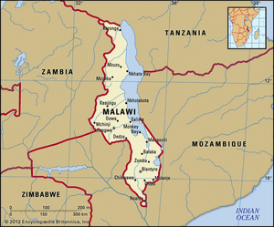
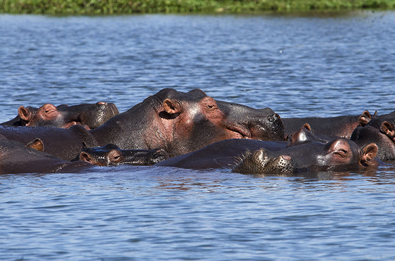

The Lake Malawi
Lake Malawi, also called Lake Nyasa, is one of Africa’s most breathtaking natural wonders.
Stretching approximately 580 kilometers (360 miles) long and 75 kilometers (47 miles) wide,
it is Africa’s third-largest lake and the ninth-largest in the world.
Known as the “Calendar Lake” due to its length and width, Lake Malawi is famous for its crystal-clear waters,
beautiful sandy beaches, and stunning sunsets.
This panoramic view captures the sheer scale and serenity of the lake, inviting visitors
to explore its natural beauty and rich biodiversity.

Geography
Lake Malawi is situated in the southeastern part of Africa and is bordered by three countries:
Malawi, Mozambique, and Tanzania. The lake is part of the East African Rift system,
making it a freshwater lake with clear, deep waters reaching up to 706 meters (2,316 feet) in depth.
It has several major inflowing rivers, including the Ruhuhu, Songwe, Dwangwa, and Bua,
and its waters eventually flow out through the Shire River, which connects to the Zambezi River.
This map illustrates the strategic location and vast size of the lake, highlighting its significance
for both local communities and regional ecosystems.

Life Around the Lake
The communities surrounding Lake Malawi have lived alongside the lake for centuries,
relying heavily on its resources for their livelihoods. Fishing is the primary source of income for millions of people,
with traditional methods using wooden canoes and hand-made nets.
Fish species such as chambo, usipa, and nsima are harvested daily, feeding local families and supplying markets.
Beyond fishing, the lake supports agriculture, transport, and tourism, making it the heart of daily life
for those who call its shores home. This image captures the harmony between people and the lake,
showing the essential role it plays in local culture and economy.

The Biodiversity
Lake Malawi is renowned worldwide for its incredible biodiversity.
It is home to more than 1,000 species of fish, the majority of which are cichlids found nowhere else on Earth.
These colorful fish exhibit unique behaviors and adaptations, making the lake a hotspot for scientific research
in evolution and ecology. Beyond fish, Lake Malawi hosts hippos, crocodiles, and a variety of bird species,
creating a vibrant ecosystem. Its diverse wildlife not only attracts researchers but also draws tourists
from around the world who wish to experience the lake’s underwater marvels.
Protecting this biodiversity is critical, as overfishing and pollution pose ongoing threats to the lake’s delicate balance.